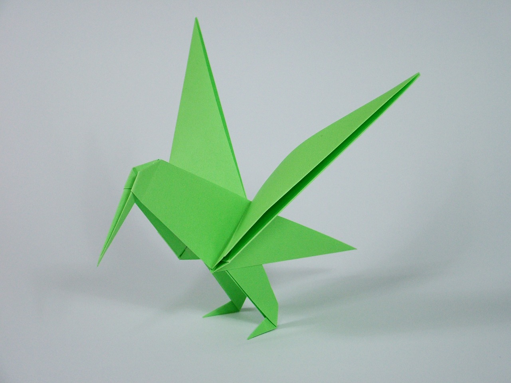
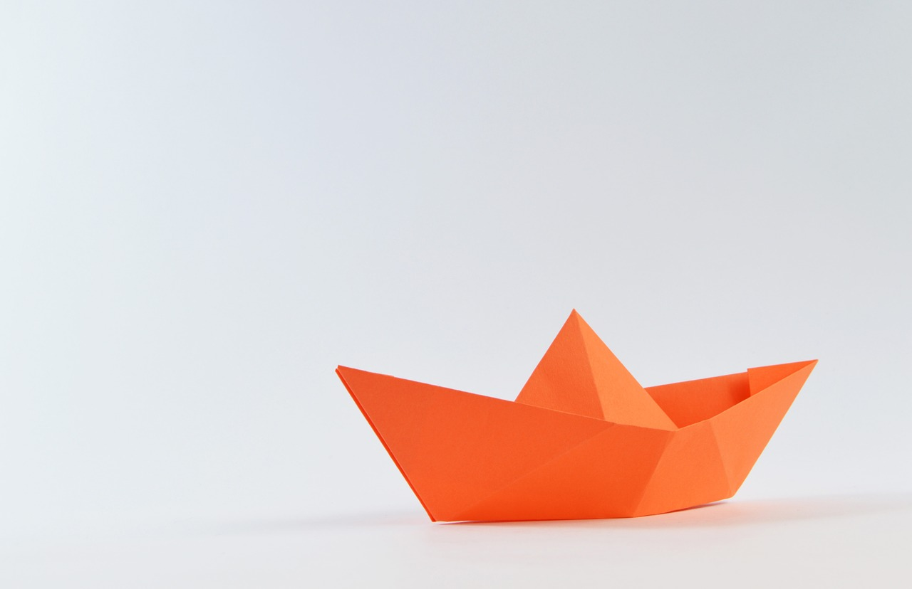
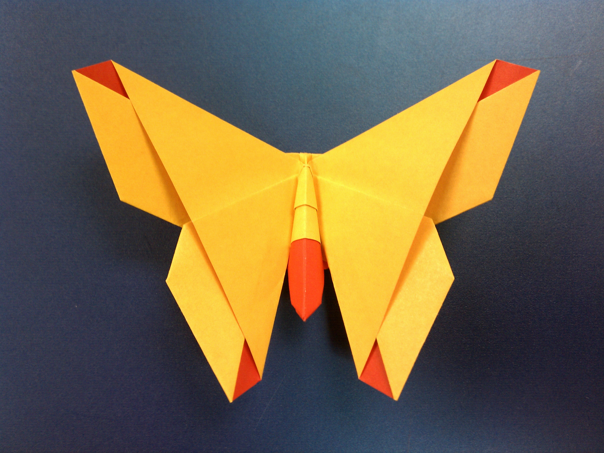
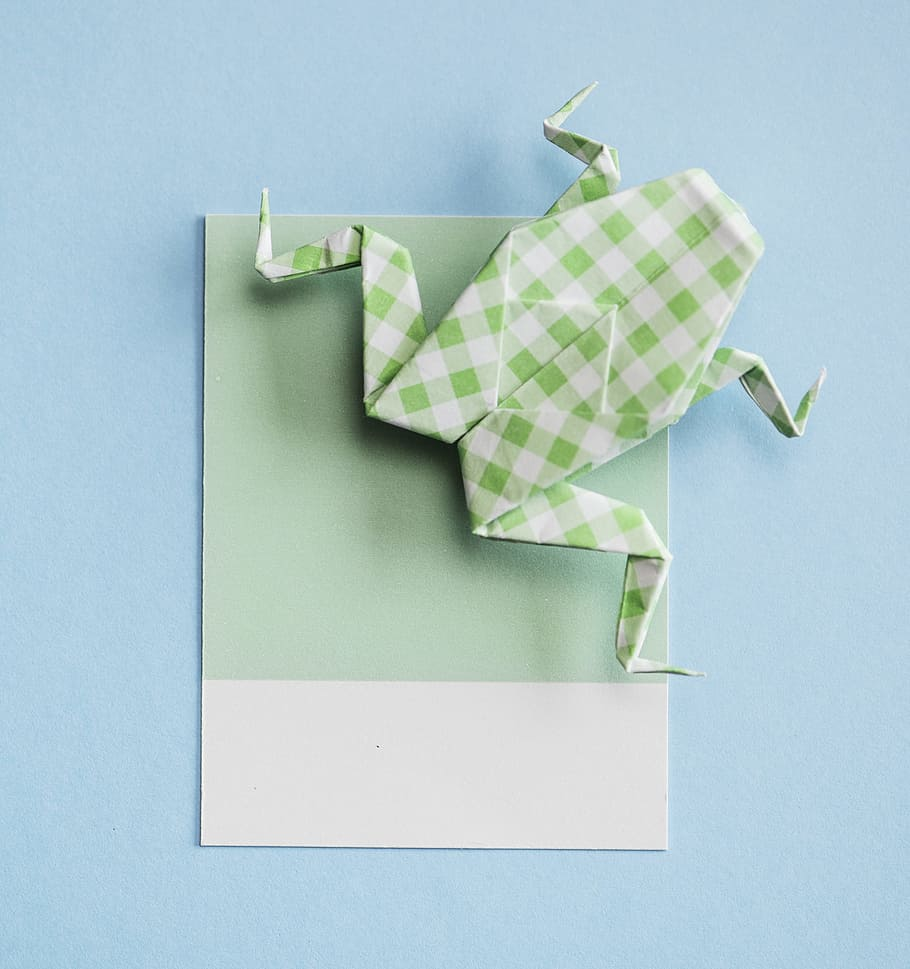
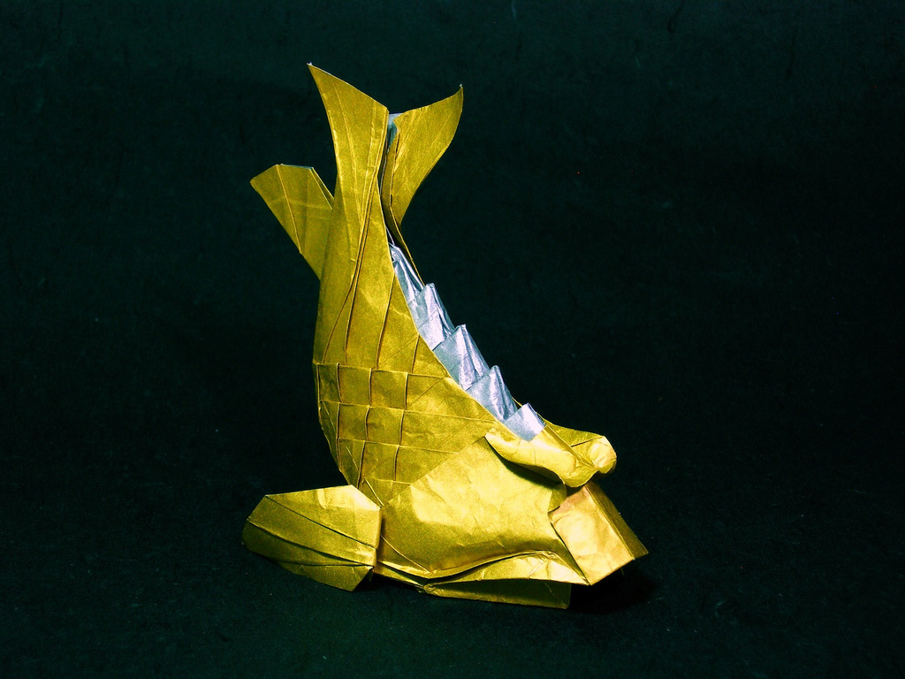

What is Origami?
-

Origami is the art of paper folding.
-

Its name is derived from the Japanese words ori("folding") and kami("paper").
-

Traditional origami consists of folding a single sheet of paper into a figure/sculpture without the use of glue, cutting, taping, or even marking it.
Brief History of Origami
Paper was first invented in China around 105 AD, where folded paper called zhezhi came soon after. By 900 AD, paper yuanbao, or gold nuggets, were tradition at Chinese funerals. These folded paper ingots were made for the intention to be thrown into a fire at the end of the ceremony.
Japan was introduced to paper in the 6th century, where it was only used in ceremonial Shinto ritual. It was not until Japan's Edo Period (1603 - 1868) that origami was seen as a leisurely activity. Oragami during this time often featured birds, flowers, birds and other shapes of nature. Originaly, origami artists were allowed to strategically cut the sheets of paper. In contrast, true origami today is only sculpted through strategic folds, and attribute that was adopted from Europe.
In Europe, it is believed that paper folding evolved from napkin folding, a practice popularized in the 17th century. Folding then moved on to schools, where they were incorporated in Friedrich Fröbel's ciriculum. Fröbel's "play and activity" institutions familized children with origiami, which in turn allowed for it to expand as an artform throughout the continent.
Famous Origami Artist
Robert J. Lang
Robert Lang has pioneered the newest kind of origami by using math and engineering to create origami sculptures. He is recognized as one of the world's leading masters of the art, with greater than 700 pieces catalogued. His work combines mathematical oragami design and the emphaphsis of line and form to create models. They have been displayed at exhibitions around the world including New York, Paris, Salem, San Diego, and Kaga, Japan.
Some Examples of Origami
-

Paper cranes are a symbol of peace in Japanese culture.
Read more -

This is just an origami frog, the creator is not known.
-

This golden fish was created by Fumiaki Kawahata.